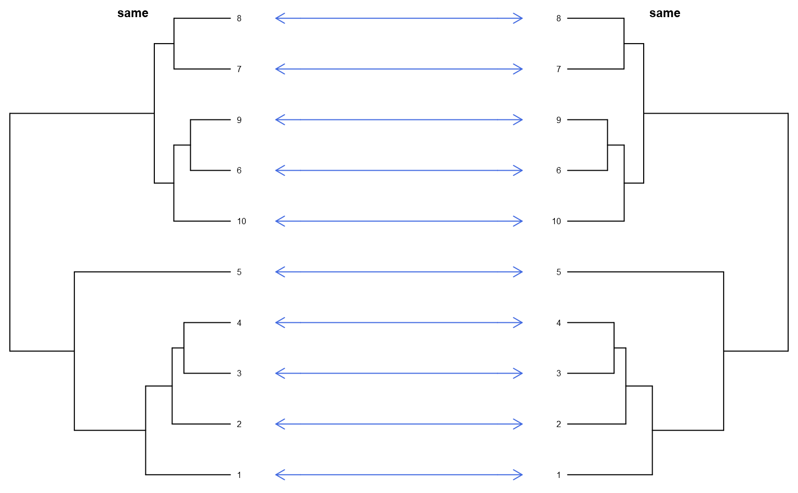

Dueling Dendrograms
dueling.dendrograms.RdGraphically compare two related dendrograms
dueling.dendrograms(p.1, p.2, lab.1 = "D1", lab.2 = "D2", cex.nodelabels=0.75, arrow.length=0.05)
Arguments
| p.1 | left-hand phylo-class dendrogram |
|---|---|
| p.2 | right-hand phylo-class dendrogram |
| lab.1 | left-hand title |
| lab.2 | right-hand title |
| cex.nodelabels | character expansion size for node labels |
| arrow.length | arrow head size |
Details
Connector arrows are used to link nodes from the left-hand dendrogram to the right-hand dendrogram.
Examples
library(aqp)#>#> #>#> #> #>library(cluster)#> Warning: package 'cluster' was built under R version 3.5.3library(ape)#> Warning: package 'ape' was built under R version 3.5.3# load sample dataset from aqp package data(sp3) # promote to SoilProfileCollection depths(sp3) <- id ~ top + bottom # compute dissimilarity using different sets of variables # note that these are rescaled to the interval [0,1] d.1 <- profile_compare(sp3, vars=c('clay', 'cec'), k=0, max_d=100, rescale.result=TRUE)#>#>#>#># cluster via divisive hierarchical algorithm # convert to 'phylo' class p.1 <- as.phylo(as.hclust(diana(d.1))) p.2 <- as.phylo(as.hclust(diana(d.2))) # graphically compare two dendrograms dueling.dendrograms(p.1, p.2, lab.1='clay and CEC', lab.2='clay and L')# graphically check the results of ladderize() from ape package dueling.dendrograms(p.1, ladderize(p.1), lab.1='standard', lab.2='ladderized')# sanity-check: compare something to itself dueling.dendrograms(p.1, p.1, lab.1='same', lab.2='same')# graphically compare diana() to agnes() using d.2 dueling.dendrograms(as.phylo(as.hclust(diana(d.2))), as.phylo(as.hclust(agnes(d.2))), lab.1='diana', lab.2='agnes')